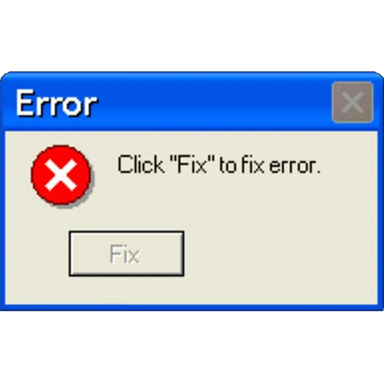

<!DOCTYPE html>
<html lang="en">

<head>
    <meta charset="UTF-8">
    <meta name="viewport" content="width=device-width, initial-scale=1.0">
    <meta http-equiv="X-UA-Compatible" content="ie=edge">
    <title>Enzo Mari redux</title>
    <style>
        html {
            background-image: url(background.png);
            min-height: 100%;
            background-size: cover;
            background-repeat: no-repeat;
            background-position: center center;
        }
        img {
            max-width: 100%;
            cursor: pointer;
        }

        /* img:hover {
            filter: hue-rotate(90deg);
        } */

        .credit {
            color: white;
        }
    </style>
</head>

<body>
    <script>
        // define your "batch of images" in an array
        var images = [
            "",
        ];
    
        // this function randomly picks an image from the batch
        function random_image() {
            return Math.floor(Math.random() * images.length);
        }
    
        // this function adds the randomly-selected image to the page
        function add_image() {
    
            // first you make a new div for the image.
            var new_image = document.createElement('div');
    
            // then you set the div's inner-HTML, ie its content, to the chosen img tag
            new_image.innerHTML = images[random_image()];
    
            // these two lines pick random coordinates for the image.
            // Adjust the range according to your requirements.
            var random_top_offset = Math.floor(Math.random() * 50) - 10; // Adjust the range as needed
            var random_left_offset = Math.floor(Math.random() * 60) - 10; // Adjust the range as needed
    
            var prev_image = document.querySelector('div:last-of-type');
    
            // If there's a previous image, adjust the position based on it.
            if (prev_image) {
                var random_top = prev_image.offsetTop + random_top_offset;
                var random_left = prev_image.offsetLeft + random_left_offset;
            } else {
                // If this is the first image, set default positions.
            var random_top = window.innerHeight / 4 - 150; // Center vertically
            var random_left = window.innerWidth / 2 - 100;
            }
    
            // assign those random coordinates to the new image
            new_image.style.position = 'absolute';
            new_image.style.top = random_top + 'px';
            new_image.style.left = random_left + 'px';
    
            // add the new image to the document's body (so it's visible!)
            document.body.append(new_image);
    
            // last step! set up the click. 
            // You want your image to 'listen' for clicks. When its clicked, it adds a new image.
            new_image.addEventListener('click', add_image);
        }
        // so that the first image appears when the page load, run the function once.
        add_image();
    </script>
</body>

</html>